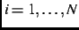
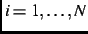
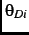
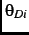
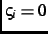
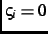
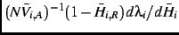
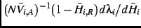

In the model the election is a game among everyone who is eligible to vote, that is, among all the electors, assumed to be a large number. The form of the model is similar to Mebane's (2000) coordinating model for presidential elections, although many details differ. Electors act noncooperatively and simultaneously, each choosing whether to vote for a Democratic or a Republican candidate for a House seat or not to vote (in the final paragraph of this section we extend the model for unopposed candidates). Most but not all electors' preferences depend on the expected outcome of the election and therefore on the strategies other electors are expected to use. Equilibrium occurs when every elector uses all available information to form such expectations and, given everything each elector knows, no elector expects to gain by using a different strategy.
Let
 ,
,
,
,
 and
denote values in the interval
and
denote values in the interval  that elector
that elector  ,
, believes at election time are the general positions of the
Democratic party (
,
, believes at election time are the general positions of the
Democratic party (
 ) and Republican party (
),
and, as relevant, the position of the Democratic president (
) and Republican party (
),
and, as relevant, the position of the Democratic president (
 )
or the Republican president (
). The value zero represents
the extreme liberal position and the value one represents the extreme
conservative. The positions
)
or the Republican president (
). The value zero represents
the extreme liberal position and the value one represents the extreme
conservative. The positions  expects the Democratic party (
)
and the Republican party (
expects the Democratic party (
)
and the Republican party (
 ) to act on after the election are,
respectively:
) to act on after the election are,
respectively:
We use a variable
 to indicate whether the preferences of elector
to indicate whether the preferences of elector
 depend on expected policy outcomes:
depend on expected policy outcomes:
 if so,

if not. Given elector
if so,

if not. Given elector  's ideal point, denoted
, the
policy-related loss that
's ideal point, denoted
, the
policy-related loss that  expects is:
expects is:
An elector's preference between voting for the Democrat and voting for the
Republican depends on which choice produces the smaller policy-related loss.
Using
to denote the proportion of electors  expects to
vote, including
expects to
vote, including  , let
denote
the proportion of the national vote received by Republican House candidates if
, let
denote
the proportion of the national vote received by Republican House candidates if
 chooses the Republican running in
chooses the Republican running in  's district, and let
denote the proportion received by Republican
House candidates if
's district, and let
denote the proportion received by Republican
House candidates if  chooses the Democrat.
chooses the Democrat.
 so that for large ,
is
well approximated by
.footnote If
, then for policy
so that for large ,
is
well approximated by
.footnote If
, then for policy  prefers the Democrat.
prefers the Democrat.
An elector's preferences between voting for one of the candidates and not
voting likewise depend on which one minimizes . Using
to denote the proportion of electors  expects to vote, excluding
expects to vote, excluding  , let
denote the proportion of the national vote
, let
denote the proportion of the national vote
 expects Republican House candidates to receive if
expects Republican House candidates to receive if  does not vote. Then
 and
respectively
approximate
and
.footnote Positive values correspond to greater
policy-related losses from voting.
does not vote. Then
 and
respectively
approximate
and
.footnote Positive values correspond to greater
policy-related losses from voting.
We can express a strategy for elector  as a random variable that
takes values on the choice set
, where
as a random variable that
takes values on the choice set
, where  corresponds to voting
for the Democrat, to voting for the Republican and to not voting. Let
continuous random variables , and represent
gains or losses that
corresponds to voting
for the Democrat, to voting for the Republican and to not voting. Let
continuous random variables , and represent
gains or losses that  experiences in addition to if
experiences in addition to if  ,
respectively, does not vote, votes for the Democrat and votes for the
Republican. The total loss for
,
respectively, does not vote, votes for the Democrat and votes for the
Republican. The total loss for  from the election is then:
from the election is then:
We make common knowledge assumptions similar to those of Mebane (2000). The
values of the parameters of
 and the joint probability
distribution of the variables in
and the joint probability
distribution of the variables in
 ,
, are
common knowledge. It is common knowledge that for every other elector , all that each elector
,
, are
common knowledge. It is common knowledge that for every other elector , all that each elector  knows about the variables is that distribution.
It is common knowledge that every
knows about the variables is that distribution.
It is common knowledge that every  acts to minimize
acts to minimize
 ,
knowing the values of its own variables. Consequently it is common knowledge
that, for some realization of the variables, (7) is every
elector's choice rule.
,
knowing the values of its own variables. Consequently it is common knowledge
that, for some realization of the variables, (7) is every
elector's choice rule.
To define the probability distribution, we assume that for every elector  there is an ordered set
there is an ordered set  that includes
that includes
 ,
,
 ,
,
 ,
,
,
,
 or
,
and a component
or
,
and a component  of each . The vector
is identically and
independently distributed across
, with a generalized extreme
value (GEV) distribution denoted .
of each . The vector
is identically and
independently distributed across
, with a generalized extreme
value (GEV) distribution denoted .  is independent of
. There are mutually exclusive and exhaustive sets of
electors, denoted ,
, each containing electors. For
every ,
is independent of
. There are mutually exclusive and exhaustive sets of
electors, denoted ,
, each containing electors. For
every ,  takes values in a set and is generated,
independently across
takes values in a set and is generated,
independently across  , by a process that has probability measure with
and
finite.
, , and and ,
, are common
knowledge.
, by a process that has probability measure with
and
finite.
, , and and ,
, are common
knowledge.
Because many of the costs (or benefits) of voting are the same regardless of which candidate an elector prefers, we assume that and covary but are independent of . To specify such a GEV distribution, we define:
We use Mebane's (2000) method to characterize mutually consistent pairs
in terms of common knowledge expections
that each elector  has when each
has when each  knows only which
set it belongs to. In that case, setting
and
in
(8a) and (8b) and using:
knows only which
set it belongs to. In that case, setting
and
in
(8a) and (8b) and using:
When a candidate runs unopposed, we assume that each elector in the affected
district uses the strategy defined by (7), except conditioning on
the pair of choices that are available. If a Democrat is running unopposed,
elector  conditions on the choice set . If a Republican is
running unopposed,
conditions on the choice set . If a Republican is
running unopposed,  conditions on . If
,
,
and
conditions on . If
,
,
and  are known but
is
known only to have the distribution , then the conditional
probabilities for
are known but
is
known only to have the distribution , then the conditional
probabilities for  to choose each alternative when, respectively, the
Democrat and the Republican are unopposed are:
to choose each alternative when, respectively, the
Democrat and the Republican are unopposed are: